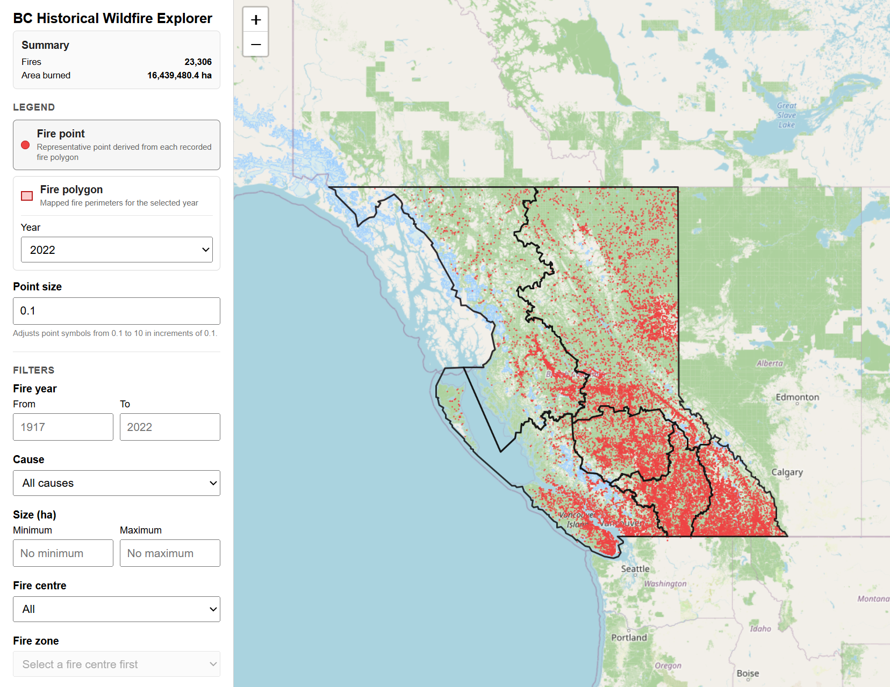
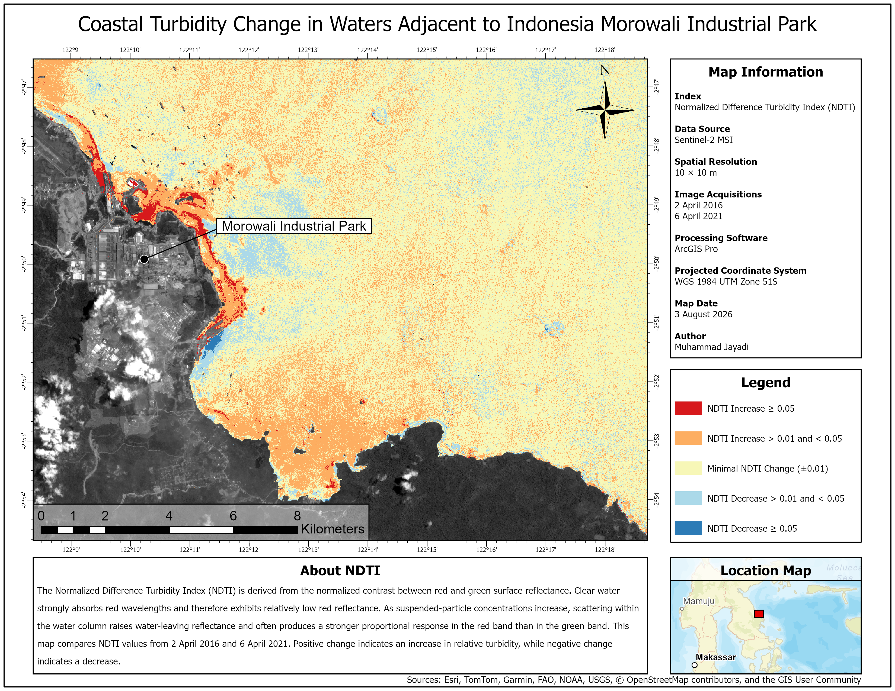
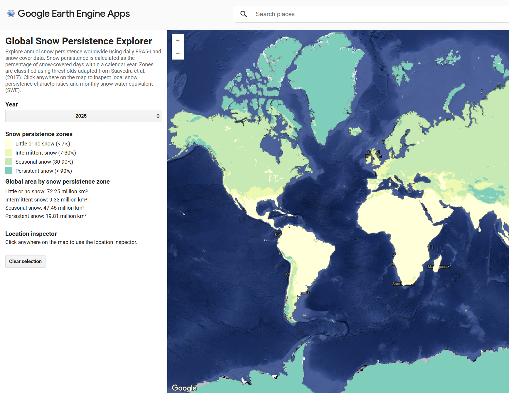

PostgreSQL/PostGIS • React/Leaflet
BC Historical Wildfire Explorer
Full-stack web GIS for exploring 23,306 historical wildfire records across British Columbia using PostgreSQL/PostGIS, Node.js/Express, React, and Leaflet.
View Project →I am a Master of Geomatics for Environmental Management (MGEM) student at the University of British Columbia with a background in forest resources management and applied experience in GIS, remote sensing, geospatial programming, and environmental management.
Interests: GIS | Remote Sensing | Geospatial Programming | Spatial Analysis | Environmental Management | Forestry

PostgreSQL/PostGIS • React/Leaflet
Full-stack web GIS for exploring 23,306 historical wildfire records across British Columbia using PostgreSQL/PostGIS, Node.js/Express, React, and Leaflet.
View Project →
ArcGIS Pro • Python (ArcPy)
Sentinel-2 coastal turbidity change analysis using an automated ArcPy workflow for water delineation, NDTI calculation, and multi-date change analysis.
View Project →
Google Earth Engine • JavaScript
Interactive Google Earth Engine web app for exploring annual snow persistence worldwide using ERA5-Land data.
View Project →